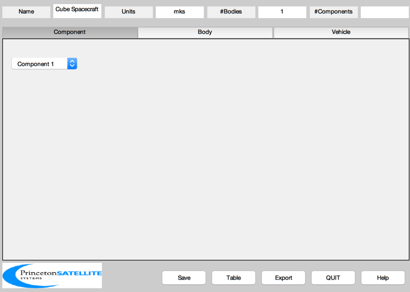
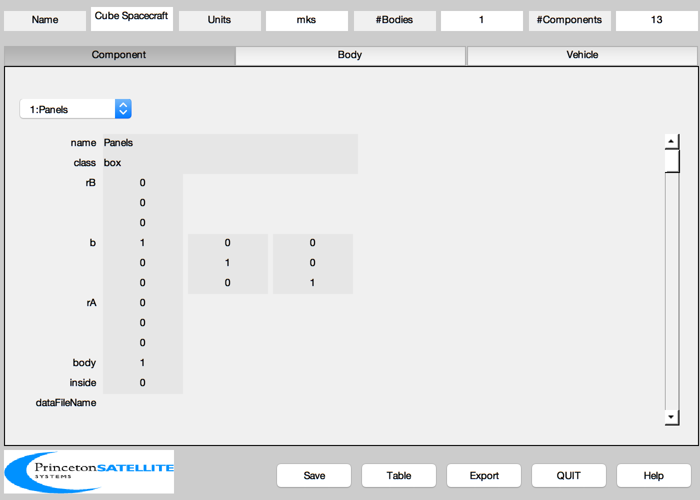
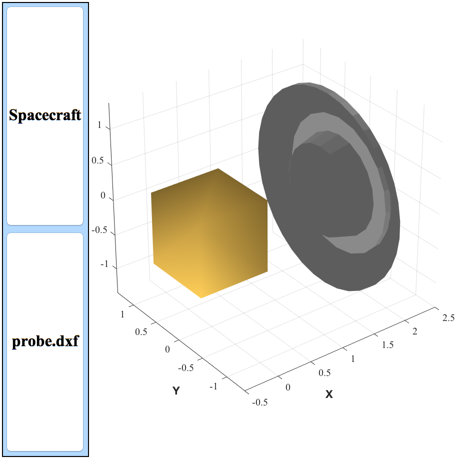

Load a dxf file and save it as a subassembly.
The subassembly is the Huygens probe. The core body is a cube.
------------------------------------------------------------------------ See also BuildCADModel, CreateBody, CreateComponent, LoadCAD, SaveStructure ------------------------------------------------------------------------
Contents
%------------------------------------------------------------------------------- % Copyright (c) 2008, 2009 Princeton Satellite Systems, Inc. % All rights reserved. %------------------------------------------------------------------------------- % Since version 8. %-------------------------------------------------------------------------------
Process the dxf files
%---------------------- gHuygensProbe = LoadCAD( 'probe.dxf', [], '', 0.1227 ); % We are saving this because the subassembly function reads in % from a mat file %------------------------------------------------------------- pMat = FindDirectory('SCMat'); SaveStructure( gHuygensProbe,fullfile(pMat,'Huygens'));
------------------------------------- DXF Warnings ------------------------------------- Comment: Flat DXF output from StudioPro(TM) 3d 1.5. ------------------------------------- Statistics for file: probe.dxf ------------------------------------- Lines = 26106 Tables = 0 Sections = 1 3DFaces = 932 Polylines = 0 Vertices = 0 ------------------------------------- AutoCAD internal parameters ------------------------------------- $UCSORG = [0.000000 0.000000 0.000000] $UCSXDIR = [0.000000 0.000000 0.000000] $UCSYDIR = [0.000000 0.000000 0.000000] $EXTMIN = [0.000000 0.000000 0.000000] $EXTMAX = [0.000000 0.000000 0.000000] ------------------------------------- Layers ------------------------------------- Layer 1 name is Mesh #11-2 Layer 2 name is Mesh #10-2 Layer 3 name is Mesh #09-2 Layer 4 name is Mesh #08-2 Layer 5 name is Mesh #07-2 Layer 6 name is Mesh #06-2 Layer 7 name is Mesh #05-2 Layer 8 name is Mesh #04-2 Layer 9 name is Mesh #03-2 Layer 10 name is Mesh #02-2 Layer 11 name is Mesh #01-2 Layer 12 name is Mesh #00-2 ------------------------------------- Polylines -------------------------------------
Core properties
%----------------- coreX = 1.0; coreY = 1.0; coreZ = 1.0; corePosition = [0; 0; 0]; mass = struct; mass.mass = 20; mass.cM = [0;0;0]; mass.inertia = 10/3*eye(3); % Initialize %----------- BuildCADModel( 'initialize' ); % Add spacecraft properties %-------------------------- BuildCADModel( 'set name' , 'Cube Spacecraft' ); BuildCADModel( 'set units', 'mks' ); BuildCADModel( 'set mass', mass );
Create bodies first
%--------------------- %%5 Core %----- m = CreateBody( 'make', 'name', 'Core' ); BuildCADModel('add body', m ); % This creates the connections between the bodies %------------------------------------------------ BuildCADModel( 'compute paths' );
Add Components second
%----------------------- % Core %----- m = CreateComponent( 'make', 'box', 'x', coreX, 'y', coreY, 'z', coreZ,... 'faceColor', 'gold foil','inside',0,... 'rA', corePosition, 'mass', 10, 'name', 'Panels', 'body', 1 ); BuildCADModel( 'add component', m ); % The position vector for the subassembly %---------------------------------------- r = [2;0;0]; % The rotation matrix for the subassembly %---------------------------------------- b = eye(3); % The subassembly body id. A subassembly is attached to an existing body %----------------------------------------------------------------------- kBody = 1; % We are attaching the Huygens model %----------------------------------- BuildCADModel( 'add subassembly', 'Huygens', kBody, r, b );
Get the finished model
%----------------------- g = BuildCADModel( 'get cad model' ); BuildCADModel('show spacecraft') %--------------------------------------